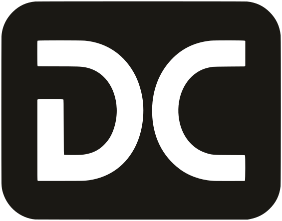

Desarrollo a medida
Una herramienta para un trabajo concreto: la web de cara al público, el panel con el que se lleva el día a día, el proceso que ahora se hace a mano. Antes de escribir, dejo por escrito qué entra, en qué plazo y por cuánto.

Dávila Cózar fran@davilacozar.esDesarrollos a medida, la configuración del servidor y las apps para Android y para iOS. A veces es una sola de esas piezas. A veces el encargo las pide juntas, y entonces las hago como un mismo trabajo.
Una herramienta para un trabajo concreto: la web de cara al público, el panel con el que se lleva el día a día, el proceso que ahora se hace a mano. Antes de escribir, dejo por escrito qué entra, en qué plazo y por cuánto.
El programa tiene que vivir en un sitio y responder. Monto el servidor, el dominio, el correo, las copias y la manera de publicar los cambios. Queda anotado, para que dentro de unos meses se pueda retomar sin reconstruir la tarde en la que se instaló.
Android e iOS, cuando el trabajo se hace mejor en el teléfono. Cuentas, avisos, la tarea de cada día fuera del escritorio. La dejo lista para publicarla en las tiendas.
Una herramienta en uso pide cambios. Sigo con las mejoras, las actualizaciones y lo que el trabajo vaya pidiendo: otra pantalla, otro aviso, el siguiente paso que aún no tocaba. El presupuesto sale de lo que ya está en marcha.
Un correo basta. Si encaja, preparo un presupuesto con el alcance, el plazo y el importe. La mitad a la aceptación y la mitad a la entrega, salvo que acordemos otra cosa.